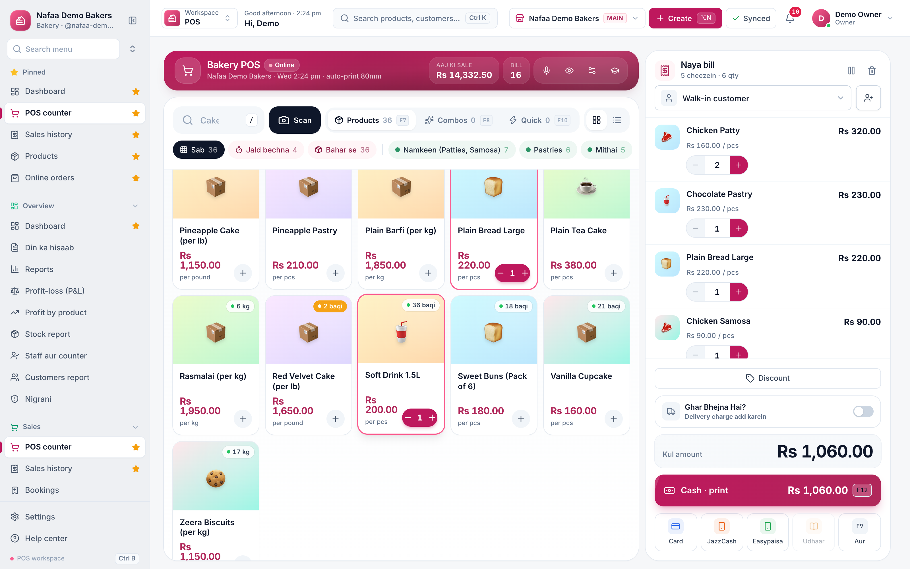
Bakery counter in Nafaa with items in the bill
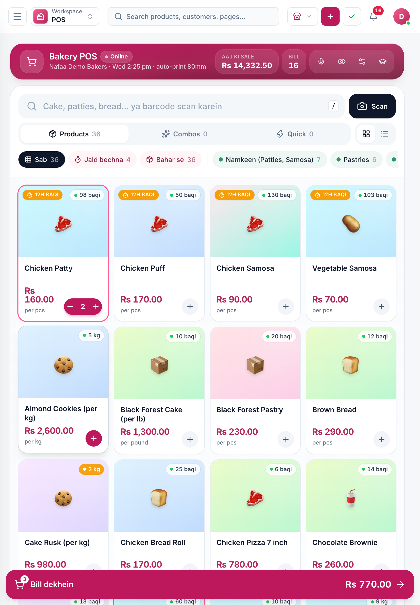
Bakery counter on a tablet
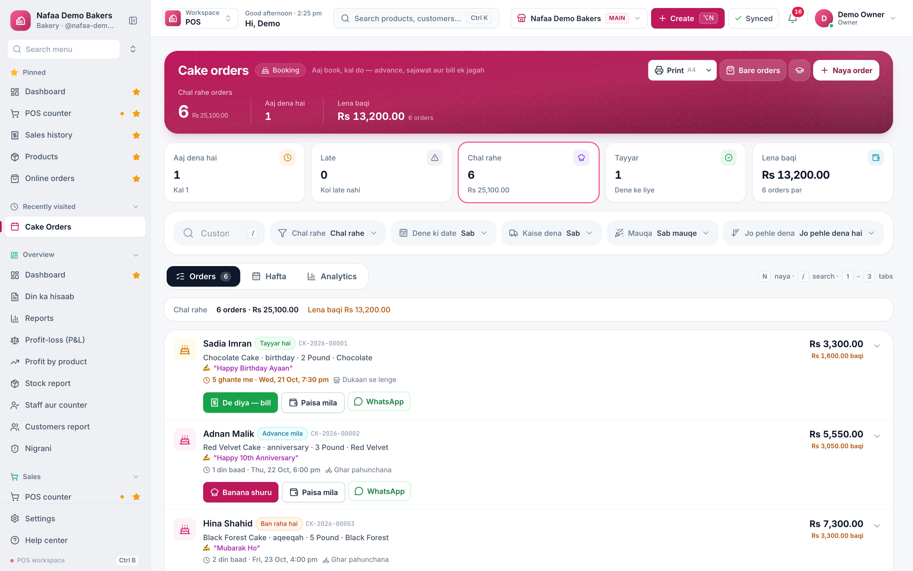
Custom cake orders with advance and delivery dates in Nafaa
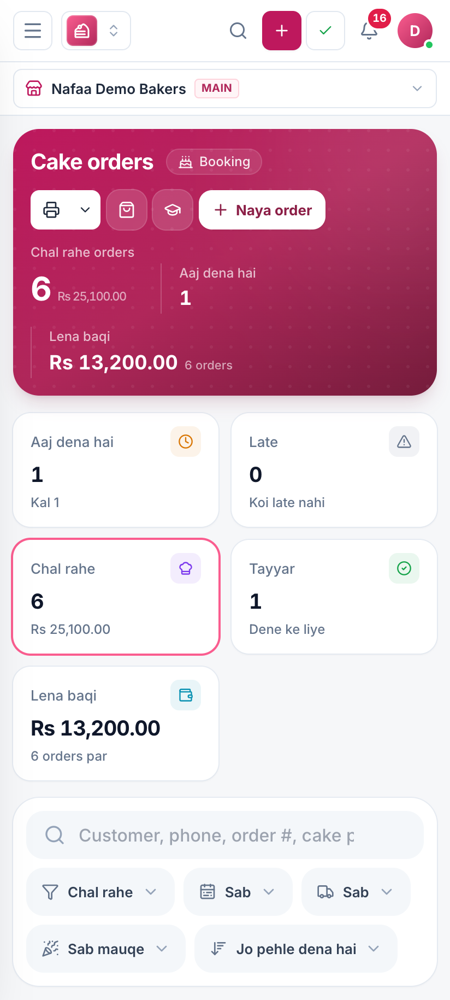
Cake orders on a phone
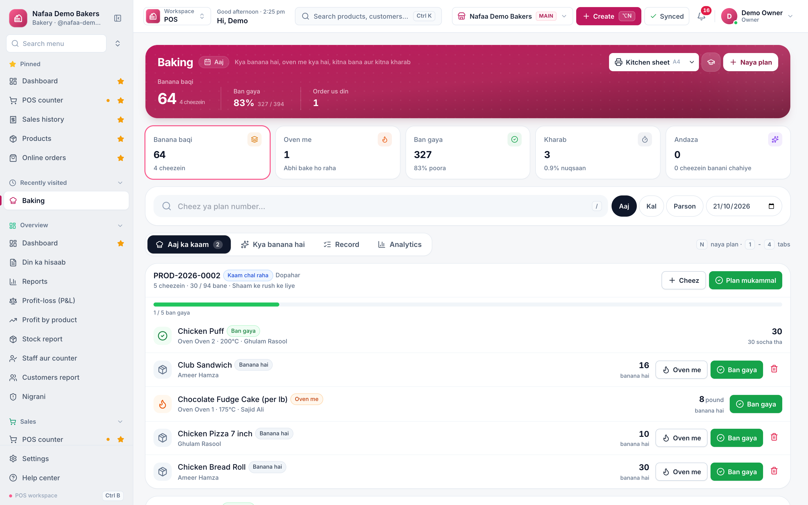
Bakery production plan for today in Nafaa
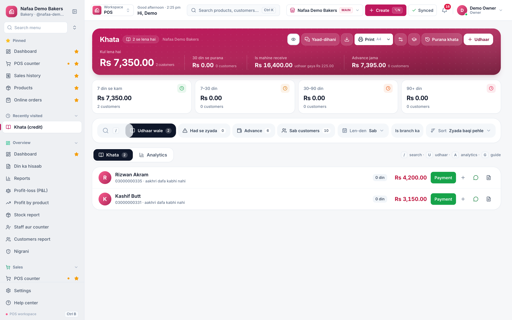
Bakery customers khata in Nafaa
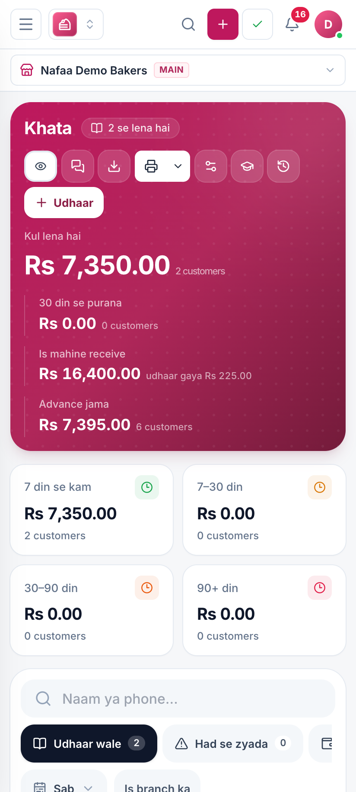
Bakery khata on a phone
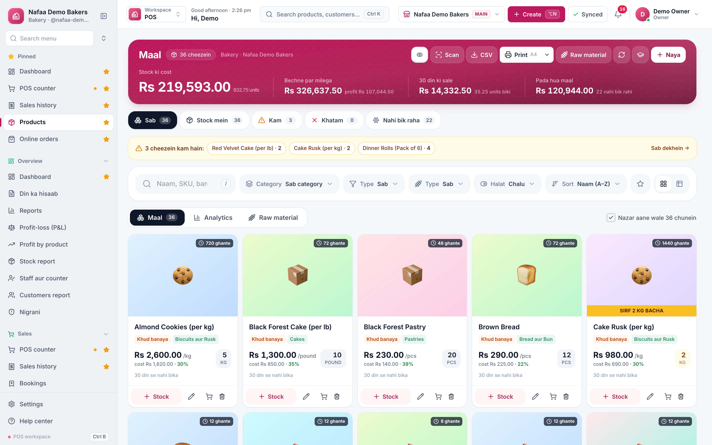
Bakery items and stock in Nafaa
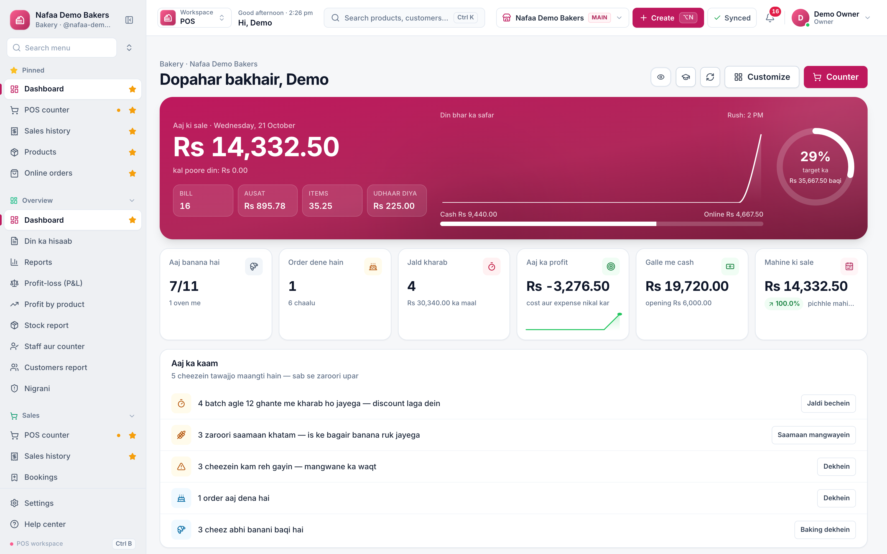
Bakery dashboard in Nafaa with today's sale
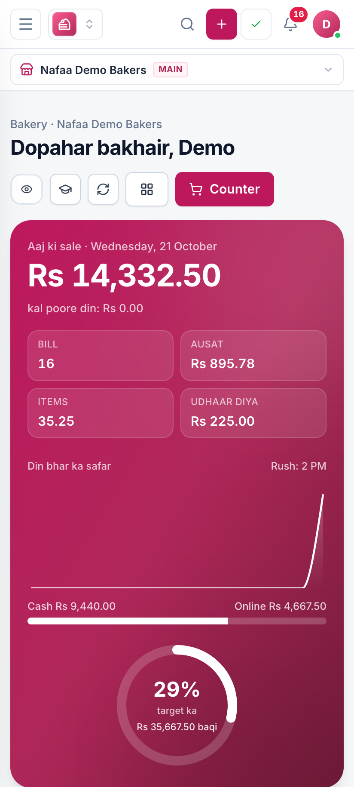
Bakery dashboard on a phone
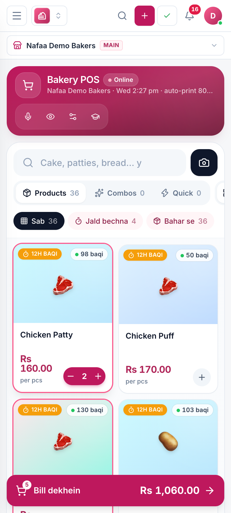
Bakery counter in Nafaa with items in the bill (phone)
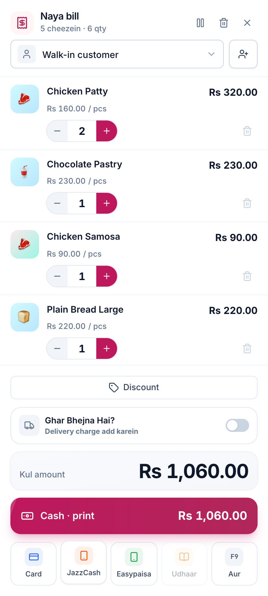
Bakery counter in Nafaa with items in the bill (phone)
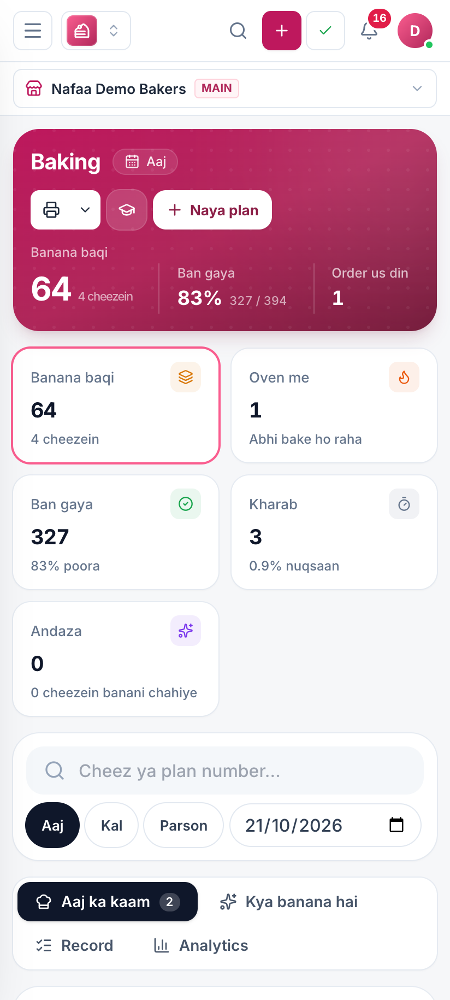
Bakery production plan for today in Nafaa (phone)
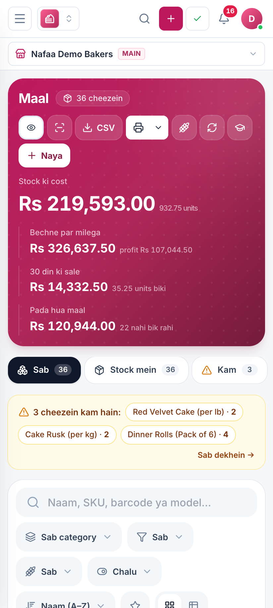
Bakery items and stock in Nafaa (phone)
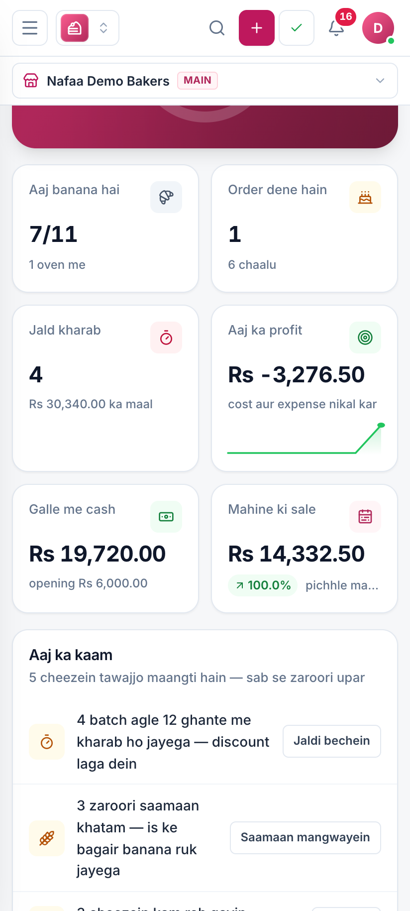
Bakery dashboard on a phone